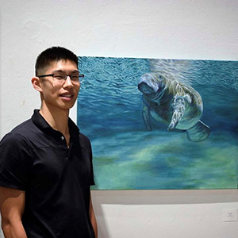

Welcome to my Design Portfolio Site
Here you can find the projects I've done in Towson's Interactive Media Design Post-Baccalaureate Certificate program.
ART765 Graduate Design for the WWW
You're currently viewing it.

Mountain View Community Church Redesign
This project contains 3 webpage templates of the redesigned site. The 3 levels of information presentation are represented by the homepage, sub-content page, and article page.
Homepage Sub-content Article
RoughAnimator Redesign
RoughAnimator is a hand drawn animation software available on iOS, Android, Mac OS, and Windows. It was made for animators by fellow animator Jacob Kafka.
Access Site
ART620 Graduate Typography


ART610 Elements of WWW Design



Noah Ru
Towson University
Interactive Media Design Post-Baccalaureate Certificate